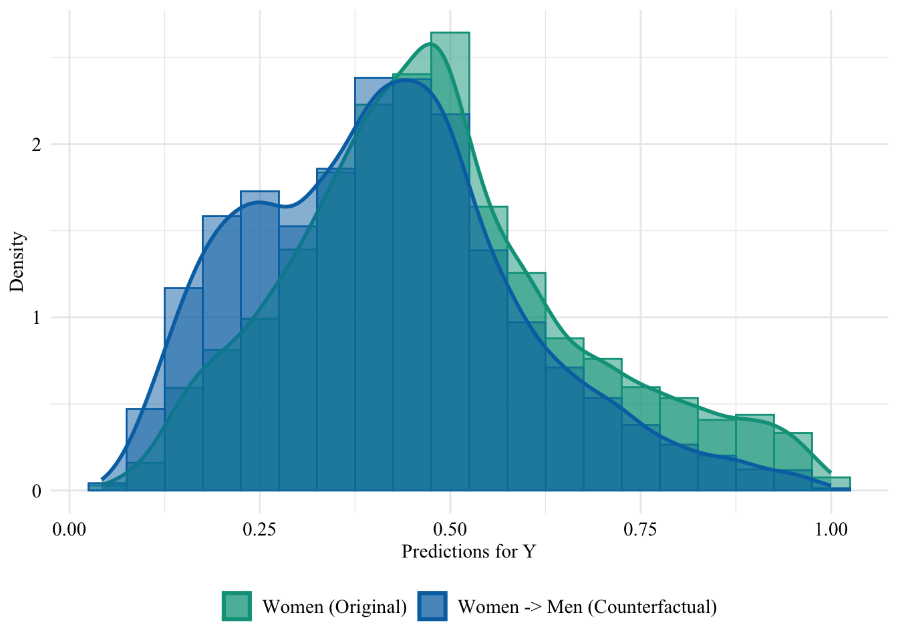
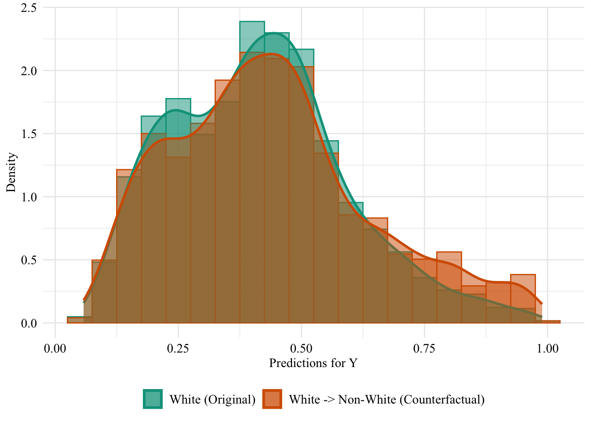
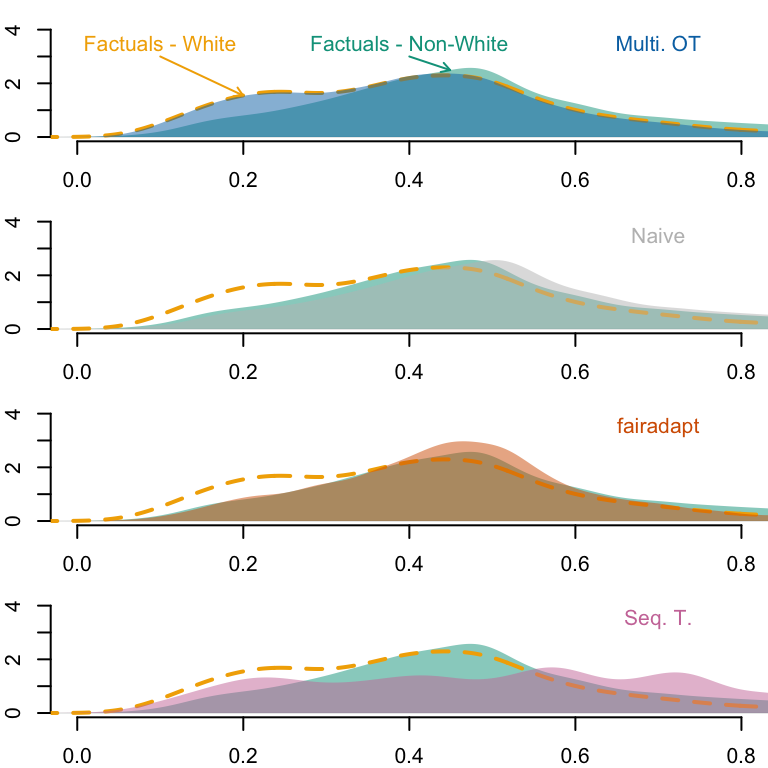

In this chapter, we extend the analysis from the previous part to the COMPAS dataset (Larson, Kirchner, and Angwin (2016)). We use a cleaned version of this dataset available in the {fairadapt} R package.
# if the package is installed, it is possible to use# library(seqtransfairness)
The COMPAS (Correctional Offender Management Profiling for Alternative Sanctions) dataset contains information used to predict whether criminal defendants are likely of recidivism (Y). The data contains real observations from Broward County, Florida. Each row gives information on individuals released on parole and whether they reoffended within two years (Y). Other characteristics such as the sex of the individual, the number of juvenile felonies, the number of juvenile misdemeanors, the number of other juvenile offenses, the number of prior offenses and the degree of charge (with two values F for felony, and M for misdemeanor). We will use the race of individuals as the sensitive attribute (S).
vars <-c("age", "sex", "juv_fel_count","juv_misd_count", "juv_other_count", "priors_count","c_charge_degree", "race", "two_year_recid")s <-"race"y <-"two_year_recid"
The data can be loaded as follows:
library(fairadapt)# reading in the COMPAS datadata("compas", package ="fairadapt")compas <- compas |>as_tibble() |>select(!!vars) |>mutate(race =fct_relevel(race, "Non-White", "White"))
We can have a quick glance at the proportion of Non-White individuals and White individuals among people who reoffended or not.
compas |>count(two_year_recid, race) |>group_by(two_year_recid) |>mutate(pct_race =round(100* n /sum(n), 2))
# A tibble: 4 × 4
# Groups: two_year_recid [2]
two_year_recid race n pct_race
<int> <fct> <int> <dbl>
1 0 Non-White 2475 62.4
2 0 White 1488 37.6
3 1 Non-White 2285 70.3
4 1 White 966 29.7
We will assume the same causal graph as in Plečko and Meinshausen (2020) (Figure 4, p. 27) and use their codes from their Github to create the adjacency matrix.
We load functions defined in our small package (notably, split_dataset()):
library(devtools)load_all("../seqtransfairness/")
ℹ Loading seqtransfairness
We fit a logistic regression model on the data to predict the outcome binary variable. First, we split the dataset into two sets: train (70%) and test (30%).
unaware logistic regression classifier: model without including the sensitive attribute.
aware logistic regression classifier: model with the sensitive attribute included in the set of features.
To do so, we use the training function, log_reg_train(), defined in our small package. When the two models are trained, we extract the predicted values on both the train set and the test set.
# Unaware logistic regression classifier (model without S)pred_unaware <-log_reg_train( data_train, data_test, s = s, y = y, type ="unaware")pred_unaware_train <- pred_unaware$pred_trainpred_unaware_test <- pred_unaware$pred_test# Aware logistic regression classifier (model with S)pred_aware <-log_reg_train( data_train, data_test, s = s, y = y, type ="aware")pred_aware_train <- pred_aware$pred_trainpred_aware_test <- pred_aware$pred_test
We create a table for each model, with the sensitive attribute and the predicted value by the model (\(\hat{y}\)), only for observations from the test set.
Let us change the sensitive attribute of individuals from the source group (Non-White) to the target group (White). Then, we use both models (unaware and aware) to predict the target binary variable.
Let us have a look at the distribution of the predicted scores of the classifier in both groups, when the predictions are made after setting the race attribute of all Non-White to White. Since the model does not use the sensitive attribute, changing it will result in absolutely no change in its predictions in this case.
The predicted values using the initial characteristics (the factuals), for the unaware model are stored in the object pred_unaware_all. We put in a table the initial characteristics (factuals) and the prediction made by the unaware model:
Figure 14.3: Unaware model, Sensitive: Race, Non-White -> White
Then, we focus on the distribution of predicted scores for ccounterfactual of Non-White individuals and factuals of White individuals Again, since the model is blind to the sensitive attribute, the distributions are perfectly aligned.
Figure 14.4: Distribution of Predicted Scores for Minority Class (Non-White), Unaware model, Sensitive: Race, Non-White -> White
14.2.2 Aware Model
We turn to the aware model. This time, the sensitive attribute is used by the classifier when it is trained. Hence, changing the sensitive attribute of individuals in the source group to that of the target group may change the predicted values for the binary outcome variable.
The predicted values by the model, on the initial characteristics (on the factuals) are stored in the pred_aware_all object.
We create a tibble with the factuals and the predictions by the aware model:
Figure 14.6: Distribution of Predicted Scores for Minority Class (Non-White), Aware model, Sensitive: Race, Non-White -> White
14.3 Multivariate Optimal Transport
We apply multivariate optimal transport (OT), following the methodology developed in De Lara et al. (2024).
The codes are run in python. We use the {reticulate} R package to call python in this notebook. Let us save the dataset in a CSV format so we can easily import in in python.
For categorical variables, we use the hamming distance.
cat_dists =list()for col in cat_cols: dist = cdist(cat_0_encoded[col].to_numpy(), cat_1_encoded[col].to_numpy(), metric='euclidean') cat_dists.append(dist)
Then we need to combine the two distance matrices. We use weights equal to the proportion of numerical variables and the proportion of categorical variables, respectively for distances based on numerical and categorical variables.
# Weight for numerical distance#alpha = len(num_cols) / (len(num_cols) + len(cat_cols))#combined_cost = alpha * num_dist#for i in range(len(cat_dists)):# beta = .5 / category_counts.iloc[i]# combined_cost += beta * cat_dists[i]combined_cost = num_distfor i inrange(len(cat_dists)): combined_cost += cat_dists[i]
Rows: 4760 Columns: 8
── Column specification ────────────────────────────────────────────────────────
Delimiter: ","
chr (2): sex, c_charge_degree
dbl (6): age, juv_fel_count, juv_misd_count, juv_other_count, priors_count, ...
ℹ Use `spec()` to retrieve the full column specification for this data.
ℹ Specify the column types or set `show_col_types = FALSE` to quiet this message.
We make predictions based on those counterfactuals obtained with multivariate optimal transport, on both models (the unaware model, and the aware model):
pred_ot_unaware <-predict( model_unaware, newdata = df_counterfactuals_ot_nonwhite, type ="response")pred_ot_aware <-predict( model_aware, newdata = df_counterfactuals_ot_nonwhite, type ="response")
counterfactuals_unaware_ot_nonwhite <- df_counterfactuals_ot_nonwhite |>mutate(pred = pred_ot_unaware, type ="counterfactual")counterfactuals_aware_ot_nonwhite <- df_counterfactuals_ot_nonwhite |>mutate(pred = pred_ot_aware, type ="counterfactual")
Let us put in a single table the predictions made by the classifier (either aware or unaware) on Women based on their factual characteristics, and those made based on the counterfactuals:
Figure 14.10: Distribution of Predicted Scores for Minority Class (Women), Aware model, Sensitive: Race, Non-White -> White

14.4 Fairadapt
We have already assumed a causal graph (see Figure 14.2).
Let us consider that we want to build counterfactuals for Non-White individuals: what if the individual had been White and not Non-White?
Let us have a look at the levels of our sensitive variable:
levels(compas |>pull(!!s))
[1] "Non-White" "White"
Two configurations will be considered in turn:
The reference class consists of White individuals, and fairadapt will be used to obtain the counterfactual values for Non-White individuals as if they had been White individuals.
The reference class consists of Non-White individuals, and fairadapt will be used to obtain the counterfactual values for White individuals as if they had been Non-White individuals.
Figure 14.14: Distribution of Predicted Scores for Minority Class (White), Unaware model, Sensitive: Race, White -> Non-White
14.4.2 Aware Model
Now, we turn to the model that includes the sensitive attribute, i.e., the aware model. Let us get the predicted values for the counterfactuals, using the aware model:
Figure 14.18: Distribution of Predicted Scores for Minority Class (White), Aware model, Sensitive: Race, Reference: Non-White individuals

14.5 Sequential Transport
We now turn to sequential transport (the methodology developed in our paper). We use the seq_trans() function defined in our small package to perform a fast sequential transport on causal graph.
Transporting age
Transporting sex
Transporting juv_misd_count
Transporting juv_other_count
Transporting juv_fel_count
Transporting priors_count
Transporting c_charge_degree
# weights: 8 (7 variable)
initial value 1700.983181
iter 10 value 1591.143276
final value 1591.092129
converged
We build a dataset with the sensitive attribute of Non-White individuals changed to White individuals, and their characteristics changed to their transported characteristics:
We make predictions based on those counterfactuals obtained with sequential transport, on both models (the unaware model, and the aware model):
pred_seq_unaware <-predict( model_unaware, newdata = df_counterfactuals_seq_nonwhite, type ="response")pred_seq_aware <-predict( model_aware, newdata = df_counterfactuals_seq_nonwhite, type ="response")
counterfactuals_unaware_seq_nonwhite <- df_counterfactuals_seq_nonwhite |>mutate(pred = pred_seq_unaware, type ="counterfactual")counterfactuals_aware_seq_nonwhite <- df_counterfactuals_seq_nonwhite |>mutate(pred = pred_seq_aware, type ="counterfactual")
Let us put in a single table the predictions made by the classifier (either aware or unaware) on Non-White individuals based on their factual characteristics, and those made based on the counterfactuals:
# Factualstb_unaware_factuals <- tb_unaware |>filter(counterfactual =="none")# Predicted valuespred_unaware_factuals_nonwhite <- tb_unaware_factuals |>filter(race =="Non-White") |>pull("pred")pred_unaware_factuals_white <- tb_unaware_factuals |>filter(race =="White") |>pull("pred")# Estimated densitiesd_unaware_factuals_nonwhite <-density(pred_unaware_factuals_nonwhite)d_unaware_factuals_white <-density(pred_unaware_factuals_white)par(mfrow =c(4, 1), mar =c(2, 2, 1, 0))x_lim <-c(0, .8)y_lim <-c(0, 4)# OTtb_unaware_ot <- tb_unaware |>filter(counterfactual =="ot")# Predicted values, focusing on Non-White --> Whitepred_unaware_ot_nonwhite_star <- tb_unaware_ot |>filter(race_origin =="Non-White") |>pull("pred")# Estimated densitiesd_unaware_ot_nonwhite_star <-density(pred_unaware_ot_nonwhite_star)plot( d_unaware_factuals_nonwhite,main ="", xlab ="", ylab ="",axes =FALSE, col =NA,xlim = x_lim, ylim = y_lim)axis(1)axis(2)polygon(d_unaware_factuals_nonwhite, col =alpha(colours_all[["source"]], .5), border =NA)lines(d_unaware_factuals_white, col = colours_all[["reference"]], lty =2, lwd =2)polygon(d_unaware_ot_nonwhite_star, col =alpha(colours_all[["ot"]], .5), border =NA)pos_arrow_ref <- .1text(x = pos_arrow_ref, y =3.5, "Factuals - White", col = colours_all[["reference"]])ind_min_ref <-which.min(abs(d_unaware_factuals_white$x - pos_arrow_ref))arrows(x1 = d_unaware_factuals_white$x[ind_min_ref],y1 = d_unaware_factuals_white$y[ind_min_ref],x0 = pos_arrow_ref, y0 =3,length =0.05, col = colours_all[["reference"]])pos_arrow_ref <- .47text(x = .4, y =3.5, "Factuals - Non-White", col = colours_all[["source"]])ind_min_ref <-which.min(abs(d_unaware_factuals_white$x - pos_arrow_ref))arrows(x1 = d_unaware_factuals_nonwhite$x[ind_min_ref],y1 = d_unaware_factuals_nonwhite$y[ind_min_ref],x0 = .4, y0 =3,length =0.05, col = colours_all[["source"]])text(x = .7, y =3.5, "Multi. OT", col = colours_all[["ot"]])# Naivetb_unaware_naive <- tb_unaware |>filter(counterfactual =="naive")# Predicted values, focusing on Non-White --> Whitepred_unaware_naive_nonwhite_star <- tb_unaware_naive |>filter(race =="White") |>pull("pred")# Estimated densitiesd_unaware_naive_nonwhite_star <-density(pred_unaware_naive_nonwhite_star)plot( d_unaware_factuals_nonwhite,main ="", xlab ="", ylab ="",axes =FALSE, col =NA,xlim = x_lim, ylim = y_lim)axis(1)axis(2)polygon(d_unaware_factuals_nonwhite, col =alpha(colours_all[["source"]], .5), border =NA)lines(d_unaware_factuals_white, col = colours_all[["reference"]], lty =2, lwd =2)polygon(d_unaware_naive_nonwhite_star, col =alpha(colours_all[["naive"]], .5), border =NA)text(x = .7, y =3.5, "Naive", col = colours_all[["naive"]])# Fairadapttb_unaware_fpt <- tb_unaware |>filter(counterfactual =="fpt")# Predicted values, focusing on Non-White --> Whitepred_unaware_fpt_nonwhite_star <- tb_unaware_fpt |>filter(race =="White") |>pull("pred")# Estimated densitiesd_unaware_fpt_nonwhite_star <-density(pred_unaware_fpt_nonwhite_star)plot( d_unaware_factuals_nonwhite,main ="", xlab ="", ylab ="",axes =FALSE, col =NA,xlim = x_lim, ylim = y_lim)axis(1)axis(2)polygon(d_unaware_factuals_nonwhite, col =alpha(colours_all[["source"]], .5), border =NA)lines(d_unaware_factuals_white, col = colours_all[["reference"]], lty =2, lwd =2)polygon(d_unaware_fpt_nonwhite_star, col =alpha(colours_all[["fairadapt"]], .5), border =NA)text(x = .7, y =3.5, "fairadapt", col = colours_all[["fairadapt"]])# Sequential transporttb_unaware_seq <- tb_unaware |>filter(counterfactual =="seq")# Predicted values, focusing on Non-White --> Whitepred_unaware_seq_nonwhite_star <- tb_unaware_seq |>filter(race =="White") |>pull("pred")# Estimated densitiesd_unaware_seq_nonwhite_star <-density(pred_unaware_seq_nonwhite_star)plot( d_unaware_factuals_nonwhite,main ="", xlab ="", ylab ="",axes =FALSE, col =NA,xlim = x_lim, ylim = y_lim)axis(1)axis(2)polygon(d_unaware_factuals_nonwhite, col =alpha(colours_all[["source"]], .5), border =NA)lines(d_unaware_factuals_white, col = colours_all[["reference"]], lty =2, lwd =2)polygon(d_unaware_seq_nonwhite_star, col =alpha(colours_all[["seq"]], .5), border =NA)text(x = .7, y =3.5, "Seq. T.", col = colours_all[["seq"]])
Figure 14.23: Densities of predicted scores for Non-White individuals with factuals and White individuals counterfactuals. The yellow dashed line corresponds to the density of predicted scores for Non-White individuals, using factuals.
Codes used to create the Figure.
# Factualstb_aware_factuals <- tb_aware |>filter(counterfactual =="none")# Predicted valuespred_aware_factuals_nonwhite <- tb_aware_factuals |>filter(race =="Non-White") |>pull("pred")pred_aware_factuals_white <- tb_aware_factuals |>filter(race =="White") |>pull("pred")# Estimated densitiesd_aware_factuals_nonwhite <-density(pred_aware_factuals_nonwhite)d_aware_factuals_white <-density(pred_aware_factuals_white)par(mfrow =c(4, 1), mar =c(2, 2, 1, 0))x_lim <-c(0, .8)y_lim <-c(0, 4)# OTtb_aware_ot <- tb_aware |>filter(counterfactual =="ot")# Predicted values, focusing on Non-White --> Whitepred_aware_ot_nonwhite_star <- tb_aware_ot |>filter(race_origin =="Non-White") |>pull("pred")# Estimated densitiesd_aware_ot_nonwhite_star <-density(pred_aware_ot_nonwhite_star)plot( d_aware_factuals_nonwhite,main ="", xlab ="", ylab ="",axes =FALSE, col =NA,xlim = x_lim, ylim = y_lim)axis(1)axis(2)polygon(d_aware_factuals_nonwhite, col =alpha(colours_all[["source"]], .5), border =NA)lines(d_aware_factuals_white, col = colours_all[["reference"]], lty =2, lwd =2)polygon(d_aware_ot_nonwhite_star, col =alpha(colours_all[["ot"]], .5), border =NA)text(x = .4, y =3.5, "Factuals - Non-White", col = colours_all[["source"]])pos_arrow <- .45ind_min <-which.min(abs(d_aware_factuals_nonwhite$x - pos_arrow))arrows(x1 = d_aware_factuals_nonwhite$x[ind_min],y1 = d_aware_factuals_nonwhite$y[ind_min],x0 = .4, y0 =3,length =0.05, col = colours_all[["source"]])pos_arrow_ref <- .2text(x = .1, y =3.5, "Factuals - White", col = colours_all[["reference"]])ind_min_ref <-which.min(abs(d_aware_factuals_white$x - pos_arrow_ref))arrows(x1 = d_aware_factuals_white$x[ind_min_ref],y1 = d_aware_factuals_white$y[ind_min_ref],x0 = .1, y0 =3,length =0.05, col = colours_all[["reference"]])text(x = .7, y =3.5, "Multi. OT", col = colours_all[["ot"]])# Naivetb_aware_naive <- tb_aware |>filter(counterfactual =="naive")# Predicted values, focusing on Non-White --> Whitepred_aware_naive_nonwhite_star <- tb_aware_naive |>filter(race =="White") |>pull("pred")# Estimated densitiesd_aware_naive_nonwhite_star <-density(pred_aware_naive_nonwhite_star)plot( d_aware_factuals_nonwhite,main ="", xlab ="", ylab ="",axes =FALSE, col =NA,xlim = x_lim, ylim = y_lim)axis(1)axis(2)polygon(d_aware_factuals_nonwhite, col =alpha(colours_all[["source"]], .5), border =NA)lines(d_aware_factuals_white, col = colours_all[["reference"]], lty =2, lwd =2)polygon(d_aware_naive_nonwhite_star, col =alpha(colours_all[["naive"]], .5), border =NA)text(x = .7, y =3.5, "Naive", col = colours_all[["naive"]])# Fairadapttb_aware_fpt <- tb_aware |>filter(counterfactual =="fpt")# Predicted values, focusing on Non-White --> Whitepred_aware_fpt_nonwhite_star <- tb_aware_fpt |>filter(race =="White") |>pull("pred")# Estimated densitiesd_aware_fpt_nonwhite_star <-density(pred_aware_fpt_nonwhite_star)plot( d_aware_factuals_nonwhite,main ="", xlab ="", ylab ="",axes =FALSE, col =NA,xlim = x_lim, ylim = y_lim)axis(1)axis(2)polygon(d_aware_factuals_nonwhite, col =alpha(colours_all[["source"]], .5), border =NA)lines(d_aware_factuals_white, col = colours_all[["reference"]], lty =2, lwd =2)polygon(d_aware_fpt_nonwhite_star, col =alpha(colours_all[["fairadapt"]], .5), border =NA)text(x = .7, y =3.5, "fairadapt", col = colours_all[["fairadapt"]])# Sequential transporttb_aware_seq <- tb_aware |>filter(counterfactual =="seq")# Predicted values, focusing on Non-White --> Whitepred_aware_seq_nonwhite_star <- tb_aware_seq |>filter(race =="White") |>pull("pred")# Estimated densitiesd_aware_seq_nonwhite_star <-density(pred_aware_seq_nonwhite_star)plot( d_aware_factuals_nonwhite,main ="", xlab ="", ylab ="",axes =FALSE, col =NA,xlim = x_lim, ylim = y_lim)axis(1)axis(2)polygon(d_aware_factuals_nonwhite, col =alpha(colours_all[["source"]], .5), border =NA)lines(d_aware_factuals_white, col = colours_all[["reference"]], lty =2, lwd =2)polygon(d_aware_seq_nonwhite_star, col =alpha(colours_all[["seq"]], .5), border =NA)text(x = .7, y =3.5, "Seq. T.", col = colours_all[["seq"]])
Figure 14.24: Densities of predicted scores for Non-White individuals with factuals and with counterfactuals. The yellow dashed line corresponds to the density of predicted scores for Non-White individuals, using factuals.

14.7 Metrics
We now turn to some metrics based on the predictions made for each model, based on the factual values in each group \(\boldsymbol{x}\), and on the counterfactual values \(\boldsymbol{x}^\star\) for individuals from the group of Non-White individuals \(\mathcal{D}_0\). For most metrics, the scoring classifier \(m(\cdot)\) is transformed into a threshold-based classifier \(m_t(\cdot)\), where \(m_t(\cdot)=1\) if \(m(\cdot) > t\), and \(m_t(\cdot)=0\) otherwise. We set the threshold to \(t=.5\).
threshold <- .5
Let us get vectors of observes values \(x_i \in \mathcal{D}\) as well as predicted scores for factual observations \(m(s_i, \boldsymbol{x}_i)\) and for counterfactual observations for individuals in \(\mathcal{D_0}\), i.e., \(m(1, \boldsymbol{x}_i^\star)\).
# Observed target variableobs_0 <- factuals_aware |>filter(race_origin =="Non-White") |>pull("two_year_recid")obs_1 <- factuals_aware |>filter(race_origin =="White") |>pull("two_year_recid")# Scores using factualspred_0_aware <- factuals_aware |>filter(race_origin =="Non-White") |>pull("pred")pred_1_aware <- factuals_aware |>filter(race_origin =="White") |>pull("pred")pred_0_unaware <- factuals_unaware |>filter(race_origin =="Non-White") |>pull("pred")pred_1_unaware <- factuals_unaware |>filter(race_origin =="White") |>pull("pred")# Scores in groups S="Non-White" using naive counterfactualspred_0_naive_aware <- pred_aware_naive_nonwhitepred_0_naive_unaware <- pred_unaware_naive_nonwhite# Scores in groups S="Non-White" using OT counterfactualspred_0_ot_aware <- tb_aware_ot |>filter(race_origin =="Non-White") |>pull("pred")pred_0_ot_unaware <- tb_unaware_ot |>filter(race_origin =="Non-White") |>pull("pred")# Scores in groups S="Non-White" using fairadapt counterfactualspred_0_fpt_aware <- pred_aware_fpt_nonwhitepred_0_fpt_unaware <- pred_unaware_fpt_nonwhite# Scores in groups S="Non-White" using sequential transport counterfactualspred_0_seq_aware <- pred_seq_awarepred_0_seq_unaware <- pred_seq_unaware
Then, we use the counter_fair_metrics() function from our package to compute the metrics presented in ?sec-cf-comparison-metrics.
De Lara, Lucas, Alberto González-Sanz, Nicholas Asher, Laurent Risser, and Jean-Michel Loubes. 2024. “Transport-Based Counterfactual Models.”Journal of Machine Learning Research 25 (136): 1–59.